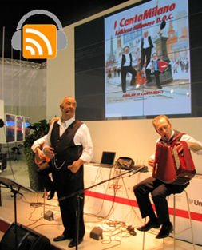

I CantaMilano are an Italian folk group performing traditional and popular songs from Milan. The lyrics are sometimes in local dialect and they tend to narrate romantic and fun stories of how simple people used to live in the past. I had the pleasure to record a few songs from them during a brief visit to Milan a few months ago.